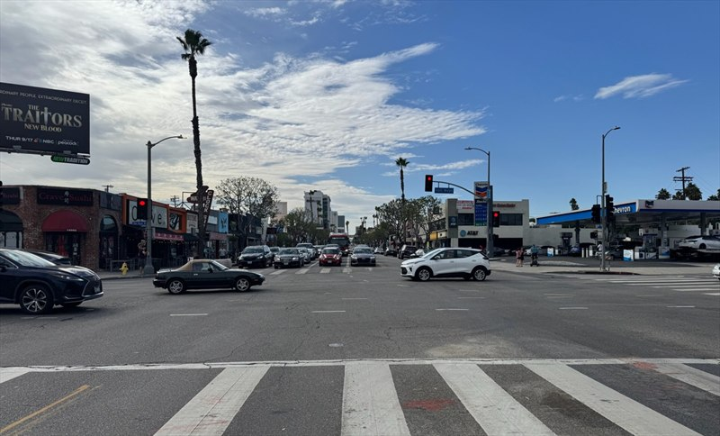
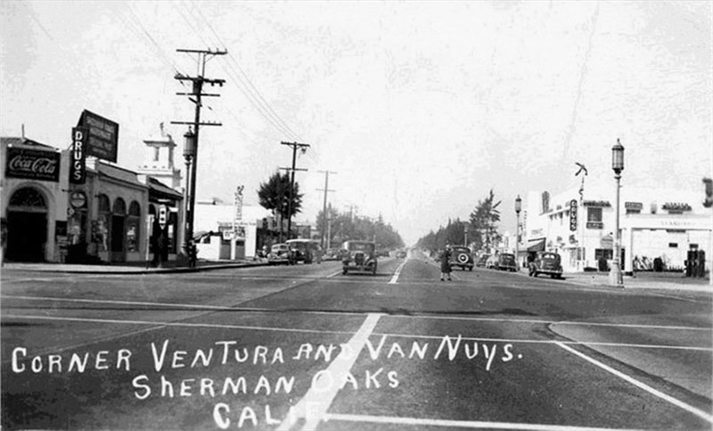

23Jan 2027
Our neighborhood. Our centennial.
Sherman Oaks turns 100.
Sherman Oaks turns 100.
A year to celebrate.
Sherman Oaks turns 100 in 2027. Join your neighbors for a year of art, community, history and celebration.


About Sherman Oaks 100
Made by neighbors, for neighbors.
A year to gather, tell our stories and imagine what comes next.
Sherman Oaks is a neighborhood in Los Angeles’ San Fernando Valley. The 2027 centennial brings together residents, businesses, schools and community organizations. The plans center on four gatherings: a mural unveiling, a cleanup and tree planting, an August pop-up museum and student art event, and a Street Fair centennial celebration.
The 2027 celebration
Sherman Oaks centennial events in 2027.
Four community events mark the centennial year, from January’s mural unveiling to the Street Fair in October. Times, venues, admission and accessibility details will be shared as plans are confirmed.
Our history
Sherman Oaks history, then and now.
The places we remember and how they’ve changed. Pick a place, then drag the divider to compare.


Drag to compare 1930 and 2026.
Sepulveda Blvd. at Mulholland Dr.
Sepulveda Tunnel
Riders on horseback and early automobiles crowd the roadway at the tunnel in 1930. Nearly a century later, the same approach carries daily traffic through the Sepulveda Pass.
1930 photograph: Hollywood Historic Photos by Decor Art Galleries (opens in a new tab). 2026 photograph: Sherman Oaks 100.
1 of 7


Drag to compare 1945 and 2026.
Ventura Blvd. at Cedros Ave.
La Reina Theatre
The La Reina opened on Ventura Boulevard in 1937; in this 1945 view its marquee advertises State Fair. The building still stands at the corner, where its former theatre front is now home to shops.
1945 photograph: Hollywood Historic Photos by Decor Art Galleries (opens in a new tab), digitally restored from two photographs of a framed print to reduce glare from the glass. 2026 photograph: Sherman Oaks 100.
See it on the map → See the marquee up close →
2 of 7


Drag to compare 1960s and 2026.
Ventura Blvd. at Sepulveda Blvd.
Ventura and Sepulveda
A Mobil station and a neighborhood market sit beside the new San Diego Freeway (405) as it climbs into the Sepulveda Pass. The freeway opened through the pass in December 1962.
1960s photograph: Hollywood Historic Photos by Decor Art Galleries (opens in a new tab), digitally restored from photographs of a framed print to reduce glare from the glass. 2026 photograph: Sherman Oaks 100.
3 of 7


Drag to compare 1962 and 2026.
Riverside Dr. · looking northwest
Fashion Square and the Ventura Freeway
Bullock's rises beside the Ventura Freeway in this January 24, 1962 aerial, as Fashion Square takes shape on the former McKinley Home for Boys site. Van Nuys–Sherman Oaks Park lies beyond.
1962 photograph: Herald Examiner Collection/Los Angeles Public Library (opens in a new tab). 2026 photograph: Sherman Oaks 100.
See it on the map → See the McKinley Home in 1927 →
4 of 7


Drag to compare 1955 and 2025.
14401 Ventura Blvd.
Casa de Cadillac
Holiday lights fill the showroom windows at Christmas 1955. The dealership opened in 1949 as Don Lee Cadillac, took the Casa de Cadillac name in 1950 and still carries its script sign.
1955 photograph: Hollywood Historic Photos by Decor Art Galleries (opens in a new tab). 2025 photograph: Sherman Oaks 100.
5 of 7
 1970
2026
1970
2026
Drag to compare 1970 and 2026.
13301 Ventura Blvd. at Fulton Ave.
Casa Vega
Casa Vega has been part of Ventura Boulevard since 1956. In this 1970 aerial, the restaurant's tile roof and sign anchor the corner of Fulton Avenue, with an open parking lot behind it. The restaurant is still on the same corner today.
1970 photograph: Hollywood Historic Photos by Decor Art Galleries (opens in a new tab). 2026 photograph: Sherman Oaks 100.
6 of 7


Drag to compare the early 1940s and 2026.
Ventura Blvd. at Van Nuys Blvd.
Ventura and Van Nuys
The arched corner storefront and the service station across the boulevard help connect these two views. Compare the intersection in the early 1940s with the same corner in 2026, photographed from a slightly different position.
Historic photograph: Getty Images. 2026 photograph: Sherman Oaks 100.
7 of 7
From the archive
Photographs from the centennial history collection. Select one to see it larger.

Sherman Oaks, March 15, 1928
Open land and the hills above the young community. The 2024 Sherman Oaks history presentation identifies a “Sherman Oaks” sign on the hillside. Photograph: Hollywood Historic Photos by Decor Art Galleries (opens in a new tab).

La Reina Theatre marquee, 1945
The marquee advertises State Fair and Men in Her Diary, both released in 1945. Digitally restored to reduce glare from the glass of the framed print. Photograph: Hollywood Historic Photos by Decor Art Galleries (opens in a new tab).

Casa de Cadillac, Christmas 1955
The showroom opened in 1949 as Don Lee Cadillac and became Casa de Cadillac in 1950. Photograph: Hollywood Historic Photos by Decor Art Galleries (opens in a new tab).

Sherman Oaks Circle, around 1940
The circle, its new roads and the open hills in one view. It lay just south of Ventura Boulevard and west of Sepulveda, where a short street still carries the name. A 1929 proposal for a “City Hall” here was never built. Photograph: Hollywood Historic Photos by Decor Art Galleries (opens in a new tab).

McKinley Home for Boys, 1927
An aerial view of the McKinley Home for Boys campus. Fashion Square opened on the former McKinley Home site in 1962. Photograph: Hollywood Historic Photos by Decor Art Galleries (opens in a new tab).

Bullock’s Fashion Square
A vintage postcard of the shopping center, with Bullock’s, I. Magnin and Desmond’s. Fashion Square opened in 1962. Image: Hollywood Historic Photos by Decor Art Galleries (opens in a new tab).
If you hold rights to one of these photographs, please contact us.
Around the neighborhood
Explore the Sherman Oaks photo map.
Visit the corners in our then-and-now photographs. Tap a pin to see the place then and now.
Loading the map…
Places to explore
Places will appear here.
Loading places…
Then-and-now photo spots will appear here in a moment.
Drag or use two fingers to move the map. Use + / − to zoom, or focus the map and use the arrow keys. Every place is also listed beside the map.
Report a street-map issue (opens in a new tab)Browse all eight then-and-now photo locations
Addresses, visiting notes and photographs are available here even without the interactive map.
-
Sepulveda Tunnel
Sepulveda Blvd. at Mulholland Dr.
Riders on horseback and early automobiles crowded the road at this tunnel in 1930. Compare that scene with the same approach in 2026.
Busy traffic route through the Sepulveda Pass. Enjoy the view safely and do not stop in the tunnel or traffic lanes.
-
Sherman Oaks Circle
Sherman Oaks Circle, south of Ventura Blvd. near Sepulveda Blvd.
The Sherman Oaks Circle, laid out just south of Ventura Boulevard, seen around 1940 with young cypress trees and open hills beyond. A 1929 plan for a “City Hall” here was never built; a short street still carries the circle’s name.
Residential street. Please view from the public sidewalk.
-
Ventura and Sepulveda
Ventura Blvd. at Sepulveda Blvd.
A Mobil station and a neighborhood market beside the new San Diego Freeway (405) in the 1960s, compared with the same corner from the air in 2026.
Busy intersection beside the 405 freeway. Both views are aerial photographs.
-
La Reina Theatre
Ventura Blvd. at Cedros Ave.
The La Reina opened on Ventura Boulevard in 1937. Compare a 1945 view of the theatre with the corner today, where the building is home to shops.
Private businesses. Please view the building from the public sidewalk.
-
Ventura and Van Nuys
Ventura Blvd. at Van Nuys Blvd.
Compare the arched corner storefront and the service station at Ventura and Van Nuys in the early 1940s with the same intersection in 2026.
Busy intersection. Use marked crosswalks.
-
Casa de Cadillac
14401 Ventura Blvd.
Opened in 1949 as Don Lee Cadillac and renamed Casa de Cadillac in 1950. Compare the showroom at Christmas 1955 with 2025.
Private business. Please view the showroom from the public sidewalk.
-
Fashion Square and the Ventura Freeway
14006 Riverside Dr.
Fashion Square opened in 1962 beside the Ventura Freeway, on the former McKinley Home for Boys site. Compare the 1962 aerial with the same view in 2026.
Shopping center open to the public.
-
Casa Vega
13301 Ventura Blvd.
Part of Ventura Boulevard since 1956. Compare a 1970 aerial view of the corner of Fulton Avenue with the same corner in 2026.
Private business. Both views are aerial photographs.
Every place has a story.
Suggest a public place for the centennial map. Share its name, location and what makes it part of Sherman Oaks.
Community stories
The Sherman Oaks Memory Wall.
A place for the community’s memories, told by the people who lived them.
Every neighbor has a story.
A favorite storefront. A school-day memory. A family photo with a story behind it. We’d love to hear yours.
Stories, photographs and videos will appear here after contributor permission and committee review.
Share a memory
Centennial sponsorship
Put your name on a year to remember.
Help bring Sherman Oaks’ centennial to life through public art, neighborhood beautification, young artists and the Street Fair. Choose a package spanning all four 2027 events or support one event.
Questions or ready to sponsor?
Email info@shermanoaks100.com with your preferred package or event. The team will confirm availability and next steps.
Centennial Legacy
Celebrate today. Invest in tomorrow.
The committee’s long-term vision includes projects that could continue beyond 2027. These ideas are separate from the Centennial Legacy sponsorship package.
More trees, lasting shade
Explore opportunities for tree planting and long-term care.
Small-business support
Consider grants that could help neighborhood businesses grow.
Student scholarships
Explore ways to support local students and their future.
Be part of it
A little time. A story. A big difference.
Choose how you’d like to take part. Each option opens an email to the committee, and nothing is sent automatically.
Volunteer
Tell us the kind of work you enjoy and your availability. Event support, art, outreach and planning are all good starting points. You can also join a working committee.
Email us to volunteerTell your story
Send a short description of your memory, about when it happened, and how you’d like us to contact you. We’ll follow up before anything is published.
Email a story ideaContribute photographs
Tell us what your photograph shows, its approximate date and who took it, if you know. We’ll help with sharing a copy and confirming permission.
Email about your photographsBring your organization into the celebration.
Businesses & civic groups
Discuss sponsorship, services, volunteer support or a place to gather.
Schools & students
Connect with the committee about student art and opportunities to take part.
Neighborhood organizations
Bring your ideas, members and local knowledge into the planning.
Participating organizations will be listed once their involvement is confirmed.
Steering committee
The people behind the year.
The Centennial Steering Committee is planning the celebration, with members from across Sherman Oaks.
Co-chairs
- Fran KerznerPresident, Sherman Oaks Chamber Foundation
- Vickie Bourdas MartinezCEO, Sherman Oaks/Encino Chamber
Committee
- Cesar CardonaSherman Oaks/Encino Chamber Member
- Emily AaronsonSherman Oaks Library
- Frank RojasSherman Oaks/Encino Chamber Board Chair
- Howard KatchenSherman Oaks Neighborhood Council
- Kelly LynchSherman Oaks Homeowners Association
- Leslie ElkanSherman Oaks Business Improvement District
- Row ZadehSherman Oaks Business Improvement District
- Tammy ScherSherman Oaks/Encino Chamber Board Member
- Tom BouletSherman Oaks Community Member
Special thanks
- Adam Khalid / Rock Solid DesignCentennial logo
- Alex Amadeo-Ranch (opens in a new tab)Website development
Working committees
Join a working committee.
Interested in joining one of the centennial’s working committees? Email us with the subject “Centennial Committee” and tell us which one interests you.
Email to join a committee- Ambassador Team
- Children’s Art Contest
- Guest Relations
- Marketing and Publicity
- Median Decorations
- Pop-up Museum
- Service Day LA
- Sponsorship Cultivation
FAQ
A few common questions.
When is the Sherman Oaks centennial?
Throughout 2027, with four community events from January to October. See the event dates; times and venues will be announced once confirmed.
Are events free?
Admission details will be shared with each event once confirmed.
How do I volunteer?
Use the volunteer option to email the committee about your interests and availability, or join one of the working committees.
How can I share a story or photograph?
Start with a story idea or a description of your photographs. The committee will follow up about next steps, credits and permission before publishing anything.
How can my business sponsor the centennial?
Choose a Centennial Series package for all four events or a single-event level. To purchase or move forward, email info@shermanoaks100.com with your name, business or organization and preferred package or level. The team will confirm availability and follow up with an agreement or invoice. Mural, service day and pop-up museum sponsorships support the Sherman Oaks Chamber Foundation, a 501(c)(3) nonprofit; Street Fair sponsorship is with the Sherman Oaks/Encino Chamber of Commerce and is generally a business expense. Please consult your tax advisor.
Can my organization take part?
Yes. Talk with the committee about sponsorship, event support, a venue, skills or other ways to contribute.
What is the Centennial Legacy?
It is a vision for projects that could continue beyond 2027, including trees, small-business support and student scholarships. Funding, program details and administration are still to be confirmed. It is separate from the Centennial Legacy package, a $25,000 sponsorship of the 2027 events.
How do I ask about accessibility?
Please contact the committee with your needs or questions. Event-specific access information will be posted as venues and plans are confirmed. See also our accessibility statement.
How do I get updates?
Email info@shermanoaks100.com to ask about updates, and check the event plans as they take shape.
Is the website finished?
The website will keep growing through 2027. Event times and venues, more then-and-now photographs and community stories will be added as they are confirmed.
Let’s talk
info@shermanoaks100.com
Questions, ideas or a way you’d like to help? Choose a topic below to open a new message in your email app, or copy the address above.